Sponsored by The Institute for Data Engineering and Science (IDEaS).
Supported by the School of Computer Science.
Foundations of Artificial Intelligence Seminar Series
by Foundations of Artificial Intelligence @ Georgia Institute of Technology
Welcome to the AI Seminar Series @ Georgia Tech, a seminar showcasing the latest research and developments in Artificial Intelligence. Our goal is to bring together students, postdocs, professors, and industry researchers to discuss a wide range of AI topics, including Machine Learning, Efficient AI, Symbolic AI, AI Theory, AI Systems, and the intersection of AI and Programming Languages and Software Engineering (PLSE).
Speaker Schedule and Abstracts
Quick index and full abstracts for each talk.
Future Talks
-
🎤Max von Hippel
🏛️Anduril
📅Monday, April 20, 2026 @ 4-5pm ET
📍 Online |
💻Zoom
📚How to Solve Secure Program Synthesis
📝Abstract
In July 2024, I (and my friend Juan) got into YC with a 400-line Python prototype, hosted on fly.io, with no authentication or thread safety. The prototype showed how one could generate property based tests (PBTs) using an LLM, and then execute them and use the results to review the code under test. We quickly raised a pre-seed, and scaled the product to ~150 users. We then worked through a sequence of product pivots touching on static analysis, explainable AI, SAT-solving, and more. I came out of this two-year adventure with a clear vision of how to solve the slop problem correctly, informed by my many adventures solving it incorrectly. In this talk I will explain what we tried, why it didn't work, and how to attack secure program synthesis head-on.
👤Bio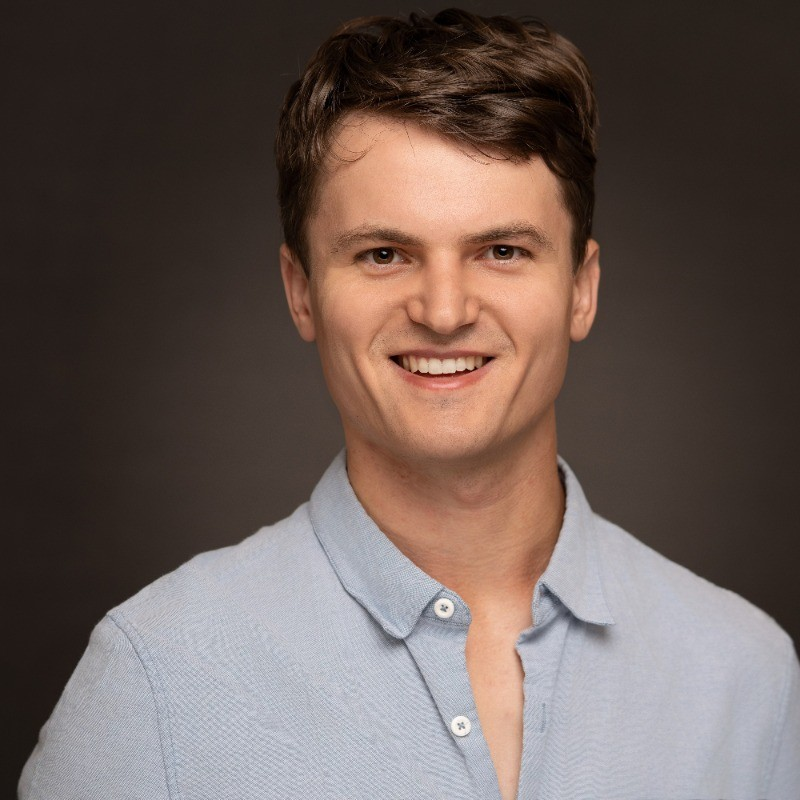
Max von Hippel holds a PhD in formal methods from Northeastern University, focused on the performance and security of network protocols. He has published (and won awards) at venues including IEEE S&P, USENIX, and ACL2, and has an H-index of 6. Subsequent to completing the PhD, Max built Benchify (YC S24), an autoformalization company. Now Max does formal methods at Anduril in Costa Mesa, CA.Past Talks
-
🎤Munmun De Choudhury
🏛️School of Interactive Computing, Georgia Tech
📅Friday, April 17, 2026 @ 12-1pm ET
📍 Classroom 380 @ Bunger Henry Building |
💻Zoom
🎥Recording
📚Rethinking the Foundations of Generative AI Through Mental Health
📝Abstract
Generative AI systems are no longer just tools — they are becoming active participants in how people make sense of themselves, seek support, and navigate moments of vulnerability. Nowhere is this shift more consequential than in mental health, where large language models (LLMs) are increasingly mediating help-seeking, shaping perceptions of care, and producing guidance at scale. This talk positions digital mental health as a critical testbed for interrogating the foundations of generative AI, where questions of reliability, alignment, and human impact are especially salient.
Drawing on empirical research, I describe how LLMs participate in mental health discourse: as conversational agents, sources of guidance, and mediators of support. While these systems demonstrate remarkable fluency and scalability, they also exhibit important limitations: variability in correctness and consistency, cultural and therapeutic misalignment, and challenges in capturing the nuance of lived experience. I further discuss emerging risks associated with generative systems in this context, including over-reliance, sycophantic responses, and the potential erosion of human agency and social connection. These findings underscore a broader tension in generative AI: systems optimized for engagement and responsiveness may not align with the goals of care, safety, and long-term wellbeing. I conclude by outlining a human-centered foundation for generative AI — one that foregrounds identity, agency, and institutional context, and advances toward systems that are not only capable of generating language, but are accountable to the human conditions they shape.
👤Bio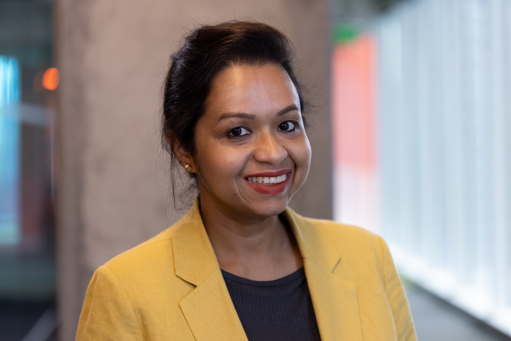
Munmun De Choudhury is J. Z. Liang Professor at the School of Interactive Computing and Co-Lead of Patient-Centered Care Delivery at the Children's Healthcare of Atlanta-Pediatric Technology Center in Georgia Institute of Technology. Dr. De Choudhury is known for her contributions to the fields of computational social science, human-computer interaction, and digital mental health. Through fostering interdisciplinary collaborations, Dr. De Choudhury and her collaborators have contributed significantly to advancing the development of computational techniques for early detection and intervention in mental health, as well as in unpacking how social media use benefits or harms mental well-being.
De Choudhury's contributions have been recognized through awards like the 2023 SIGCHI Societal Impact Award, the 2023 ICWSM and the 2022 Web Science Trust Test-of-Time Awards, the 2021 ACM-W Rising Star Award, as well as nearly two dozen paper awards. In 2024, she was inducted into the SIGCHI Academy and in 2025 was named an ACM Distinguished Member. Beyond her academic contributions, Dr. De Choudhury is a persistent contributor to policy-framing and advocacy initiatives, and is frequently sought for expert advice to governments and media. Notably, Dr. De Choudhury was an invited contributor to the Office of U.S. Surgeon General’s 2023 Advisory on The Healing Effects of Social Connection. Currently, she serves as a member of the Technical Advisory Group of the Commission for Social Connection at the World Health Organization and also advises the World Bank.
-
🎤Isil Dillig
🏛️University of Texas, Austin
📅Wednesday, 8 April 2026 @ 3:30-4:30pm ET
📍 Classroom C341 @ Van Leer Building |
💻Zoom
🎥Recording
📚Trustworthy Neuro-Symbolic Programming with Informal Specifications
📝Abstract Neuro-Symbolic Programming (NSP) treats learning-enabled systems as programs that compose symbolic control structure composed with learned neural primitives for perception and prediction. NSP offers a principled response to a central challenge for logic and formal methods in the age of machine learning: how to obtain trustworthy, compositional behavior when key components are statistical and uncertain. This talk gives an gives an overview of recent advances in NSP along three axes: (1) domain-specific languages targeting real-world use cases, (2) learning techniques for fitting program structure based on informal specifications, and (3) approaches for ensuring correctness despite noisy neural components and incomplete specifications.👤BioIsil Dillig is a Professor of Computer Science at the University of Texas at Austin, where she leads the UToPiA research group. Her research interests span formal methods and programming languages. She received her B.S., M.S., and Ph.D. in Computer Science from Stanford University. Her work has been recognized with the SIGPLAN Robin Milner Young Researcher Award, an Alfred P. Sloan Research Fellowship, and an NSF CAREER Award, as well as best paper awards at PLDI, POPL, OOPSLA, and ETAPS. She has served as Program Committee Chair for PLDI 2022 and CAV 2019, and she has received multiple teaching awards at UT Austin.
-
🎤Thomas Ball
🏛️Honorary Professor, Lancaster University / Affiliate Faculty, University of Washington
📅Monday, April 6, 2026 @ 4-5pm ET
📍 Suddath Seminar Room 1128 @ Petit Institute for Bioengineering and Bioscience |
💻Zoom
🎥Recording
📚The Micro:bit Innovation and Research Lab (https://lancaster.ac.uk/mirl)
📝Abstract
In 2015, I led the team at Microsoft that worked with the BBC and technical partners, including ARM, Nordic, Lancaster University, and Farnell, to deploy one million BBC micro:bits to all 5th graders in the UK. This effort was successful and led in 2016 to the creation of the non-profit Micro:bit Educational Foundation (https://microbit.org) as well as Microsoft MakeCode (https://www.makecode.com). Today, through our joint efforts, over 11 million micro:bits have been distributed to over 85 countries, reaching over 70 million children. The micro:bit ecosystem that makes this possible consists of hardware, open-source software, accessory vendors, content providers, and more.
The Foundation’s charter is to “inspire every child to create their best digital future”. The recently announced Micro:bit Research and Innovation Lab (MIRL) complements the Foundation work via its three “pillars”: (1) expanding the micro:bit community outside of computing education; (2) performing studies to better understand how people use the micro:bit; (3) forwarding the state of the art in the platform, both the hardware and software stack. The MEF and MIRL’s work focuses on physical computing projects that connect computing to the real world, showing how computing concepts integrate into the many systems that humanity depends on.
In this talk, I'll briefly review the last 10 years of the BBC micro:bit and then look ahead to the next 10 years. One of the aspects of the micro:bit platform that I am most excited about is that it enables students to experience computing systems and the many foundational concepts associated with them “in miniature”, that is, in an environment that is designed to be low-cost, reliable, modular, safe, and simple to get started with, but with many progression pathways. I'll review two exciting projects: micro:bit apps (https://microbit-apps.org), which makes use of display shields and MakeCode to enable the creation of apps for cross-curricular activities, and Jacdac (https://aka.ms/jacdac), a plug-and-play system to extend the capabilities of the micro:bit.
👤Bio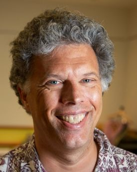
Thomas (Tom) Ball is a co-founder of the influential SLAM software model-checking project and creation of the Static Driver Verifier tool for finding defects in Windows device drivers. Tom is a 2011 ACM Fellow for ‘contributions to software analysis and defect detection’. As a manager, he nurtured research areas such as automated theorem proving, program testing/verification and empirical software engineering, and their application to industrial scale software engineering problems. Since 2015, he worked to bring the BBC micro:bit to market (more than 10 million worldwide to date), establish the Microsoft MakeCode platform to support CS education efforts, and created Jacdac (https://github.com/jacdac), a new plug-and-play system for microcontrollers. He currently works on micro:bit apps, which provide new ways to use the micro:bit inside and outside the classroom (https://microbit-apps), with colleagues at Lancaster University.-
🎤Subbarao Kambhampati
🏛️Arizona State University
📅Monday, 30 March 2026 @ 2-3pm ET
📍 Classroom 105 @ Instructional Center (IC) |
💻Zoom
🎥Recording
📚On the Centrality of Verifiers (Simulators/World Models) In the Quest for Robust LLM Reasoning/Planning
📝Abstract Standard LLMs, trained autoregressively on the web corpora, have been known to be fragile in their planning and reasoning abilities. A new breed of reasoning models, called LRMs, have shown significant improvements on reasoning/planning benchmarks. I will argue that these advances in robustness can conceptually be best understood as starting with a test-time generate-test loop that provides robustness guarantees, and taking it back to the post-training phase–to compile the robust solutions into the base LLM. In particular, I will present the LLM-Modulo framework as a way of starting with LLMs being used as an informed but fallible generator in a “generate test” loop, with the testing done by external verifiers, simulators or world models (whether human-coded or learned). I will then show how the post training phase of reasoning models can be understood as compiling this verifier signal into the generator. I will discuss how the test-time and post-training phases can benefit from more granular/richer feedback from the solutions (LLM-Modulo “back-prompting” in the case of test-time scaling, and self-distillation in the case of post-training). I will also discuss how the feedback/criticism can be extended from solution to the intermediate steps of the solution construction (with the so-called “LLM-Process-Modulo” approach). I will end by discussing the ramifications of these insights to the learning of verifiers/simulators/world models, as well as the quest for neurosymbolic approaches for intelligence.👤Bio
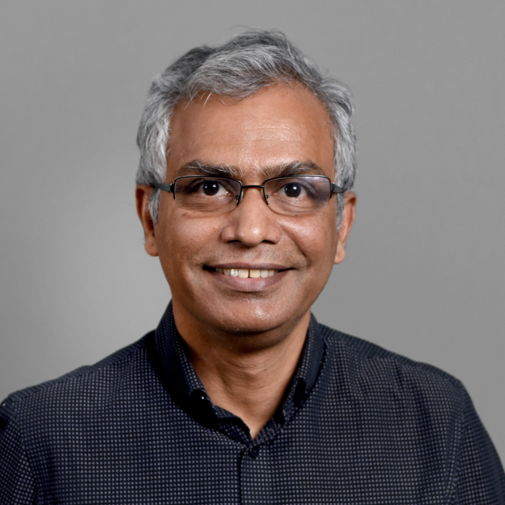
Subbarao Kambhampati is a professor of computer science at Arizona State University. Kambhampati studies fundamental problems in planning and decision making, motivated in particular by the challenges of human-aware AI systems. He is a fellow of Association for the Advancement of Artificial Intelligence, American Association for the Advancement of Science, and Association for Computing machinery, and a recent recipient of the AAAI Patrick H. Winston Outstanding Educator award. He served as the president of the Association for the Advancement of Artificial Intelligence, a trustee of the International Joint Conference on Artificial Intelligence, the chair of AAAS Section T (Information, Communication and Computation), and a founding board member of Partnership on AI. He received his B.Tech. from IIT Madras, and MS and PhD from University of Maryland. He is a distinguished alumnus of both. Kambhampati’s research as well as his views on the progress and societal impacts of AI have been featured in multiple national and international media outlets. He can be followed on Twitter @rao2z.-
🎤Satish Chandra
🏛️Meta
📅Friday, Mar 6th, 2026 | 1PM - 2PM (ET)
📍 CHOA Seminar Room @ Krone Engineered Biosystems Building (EBB) |
💻Zoom
📚Coding and AI: How did we get here and where are we going?
📝Abstract In a very short period of time, AI has completely changed how we are writing code. In this talk, I will give an overview of how we got to this juncture, the big technical insights along the way, and how the industry has embraced the use of AI in software development. I will talk about some of the projects that I’ve been involved in that explore the boundaries of what we can do with current technology as applied to code. These projects cover autonomous bug fixing and more generally, reasoning about code. I will conclude with some speculative remarks on some of the promising opportunities for researchers in software engineering.👤BioSatish Chandra is a research scientist at Meta, where he applies machine learning techniques to improve developer productivity. His work has spanned many areas of programming languages and software engineering, including program analysis, type systems, software synthesis, bug finding and repair, software testing and, of course, application of AI to software development. His research has been widely published in leading conferences in his field. Satish Chandra obtained a PhD from the University of Wisconsin-Madison, and a B.Tech from the Indian Institute of Technology-Kanpur, both in computer science. He is an ACM Fellow and an elected member of WG 2.4.
-
🎤Lisa Carbone
🏛️Rutgers University
📅Thursday, Feb 26th, 2026 | 4:30PM - 5:30PM (ET)
💻Zoom
🎥Recording
📚AI Tools for Infinite Dimensional Symmetry Groups
📝Abstract Lie group analogs for infinite dimensional Lie algebras are sophisticated mathematical structures, many of which encode symmetries in high-energy theoretical physics. Of particular interest are those groups associated to Borcherds (generalized Kac-Moody) algebras, particularly the Monster Lie algebra m. This Lie algebra, discovered by Borcherds, admits an action of the Monster finite simple group M and played an important role in the solution of part of the Conway-Norton Monstrous Moonshine conjecture. A Lie group analog for m has been recently constructed, completing a long-sought objective in the theory. However, the scale and complexity of this vast new structure pose significant computational and theoretical challenges. We discuss how various AI-driven approaches have been used to overcome these obstacles and to navigate this infinite dimensional landscape.👤BioLisa Carbone is a Professor of Mathematics at Rutgers University. She previously served as a Benjamin Peirce Assistant Professor of Mathematics at Harvard University. Her area of research is infinite dimensional algebra and Lie theory. She is a Fellow of the Australian Mathematical Society, a Trusted Tester for Google Gemini Deep Think and an External Member at the Laboratory for Artificial Intelligence in Mathematics Education at Stevens Institute of Technology.
-
🎤Sanjit A. Seshia
🏛️University of California, Berkeley
📅Thursday, Feb 19th, 2026 | 2PM - 3PM (ET)
📍 1116 East Seminar Room @ Klaus |
💻Zoom
🎥Recording
📚Full-Stack AI-Enabled Formal Methods: Past, Present, and Future
📝Abstract Formal methods are crucial for ensuring the dependability and security of our computing infrastructure, spanning software, hardware, networked, and cyber-physical systems. In order to be scalable and usable, these formal methods require a full-stack approach to automated reasoning where strategies for formal modeling, specification, verification, and synthesis are well integrated, and the computational hardness of the underlying reasoning problems is mitigated by domain-specific modeling and reasoning strategies. In this talk, I will describe our approach to full-stack formal methods by infusing machine learning (ML) and data-driven artificial intelligence (AI) into traditional deductive automated reasoning. This approach to AI-enabled formal methods, developed over 20+ years, has been pioneered in the UCLID (pronounced "Euclid") and UCLID5 projects. It has been demonstrated for modeling and verifying heterogeneous systems including combinations of hardware and software, real-time embedded systems, and complex distributed systems, with industrial deployments. UCLID5 embraces a multi-modal approach to formal methods which fits well with the need to model and verify heterogeneous systems. I will discuss how ML and AI can be effective across the formal methods stack, including in computational engines such as satisfiability solvers (SAT/SMT/QBF), for model checking and compositional program verification, as well as for creating formal UCLID5 models from natural language. The talk will cover foundational principles including "verification by reduction to synthesis" and oracle-guided learning, and how these subsume the use with formal methods of newer AI technologies such as large language models (LLMs). I will illustrate the key ideas with representative use cases of UCLID5, and will conclude with an outlook to the future of AI-enabled formal methods for system design.👤Bio
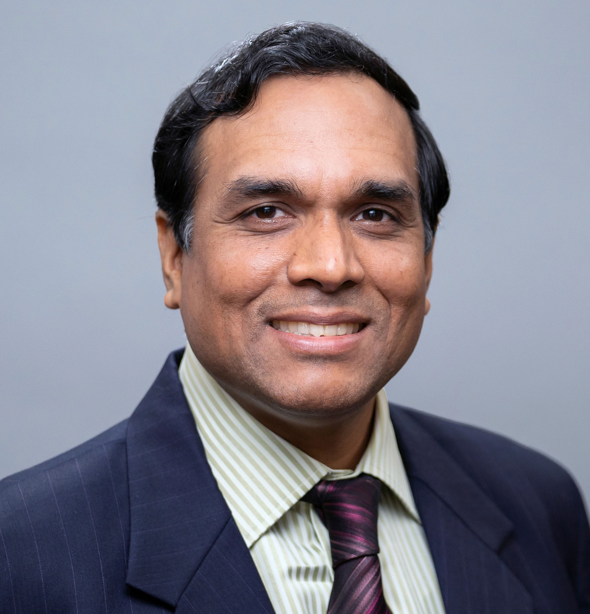
Sanjit A. Seshia is the Cadence Founders Chair Professor in the Department of Electrical Engineering and Computer Sciences at the University of California, Berkeley. He received an M.S. and Ph.D. in Computer Science from Carnegie Mellon University, and a B.Tech. in Computer Science and Engineering from the Indian Institute of Technology, Bombay. His research interests are in formal methods for dependable and secure computing, spanning the areas of cyber-physical systems (CPS), computer security, distributed systems, artificial intelligence (AI), machine learning, and robotics. He has made pioneering contributions to the areas of satisfiability modulo theories (SMT), SMT-based verification, and inductive program synthesis. He is co-author of a widely-used textbook on embedded, cyber-physical systems and has led the development of technologies for cyber-physical systems education based on formal methods. His awards and honors include a Presidential Early Career Award for Scientists and Engineers (PECASE), an Alfred P. Sloan Research Fellowship, the Frederick Emmons Terman Award for contributions to electrical engineering and computer science education, the Donald O. Pederson Best Paper Award for the IEEE Transactions on CAD, the IEEE Technical Committee on Cyber-Physical Systems (TCCPS) Mid-Career Award, the Computer-Aided Verification (CAV) Award for pioneering contributions to the foundations of SMT solving, and the Distinguished Alumnus Award from IIT Bombay. He is a Fellow of the ACM and the IEEE.-
🎤Walter Moreira
🏛️University of Texas at Austin
📅Thursday, Feb 5th, 2026 | 4PM - 5PM (ET)
📍 Classroom 183, J. Erskine Love Building |
💻Zoom
📚Automated Formalization of OEIS using the Sequencelib Platform
📝Abstract The On-Line Encyclopedia of Integer Sequences (OEIS) is a web-accessible database cataloging interesting integer sequences and associated theorems. With more than 390,000 sequences and 12,000 citations, the OEIS is one of the most robust and highly cited resources in all of theoretical mathematics. The Sequencelib project provides an open-source computational platform to formalize the mathematics contained within the OEIS using the Lean programming language. With contributions made through a combination of hand-written formalizations, AI and metaprogramming, Sequencelib currently contains formalizations for more than 25,000 sequences and over 1.6 million theorems about their values. In this second talk, we will provide an overview of the design and implementation of the metaprogramming capabilities in Sequencelib, including the OEIS attribute, which can be used to automatically attach OEIS sequence metadata to a Lean definition, and the oeis-tactic, which can be used to automatically prove theorems about the values of sequences. We also detail OEIS-LT, a lightweight, multi-threaded Lean tool server that bundles these capabilities into a scalable, machine-friendly API. Together, these tools support automated formalization workflows, and as an example, we describe the design and implementation of a computational pipeline that built on the work of Gauthier, et al. and leveraged OEIS-LT to formalize more than 25,000 sequences from the OEIS.👤BioDr. Walter Moreira is a mathematician and software engineer that has experience across a wide spectrum of disciplines. With a background in pure mathematics, he has worked at the Astronomy Department at the University of Texas at Austin, the Texas Advanced Computing Center, and Canon Nanotechnologies, among other places. He specializes in developing software containing strong theoretical foundations and using formal methods. He is currently working on the formalization of the On-Line Encyclopedia of Integer Sequences.
-
🎤Joe Stubbs
🏛️University of Texas at Austin
📅Tuesday, Feb 3rd, 2026 | 4PM - 5PM (ET)
📍 Classroom 380, Bunger Henry Building |
💻Zoom
📚Sequencelib: A Platform for Formalizing the OEIS
📝Abstract The On-Line Encyclopedia of Integer Sequences (OEIS) is a web-accessible database cataloging interesting integer sequences and associated theorems. With more than 390,000 sequences and 12,000 citations, the OEIS is one of the most robust and highly cited resources in all of theoretical mathematics. The Sequencelib project provides an open-source computational platform to formalize the mathematics contained within the OEIS using the Lean programming language. With contributions made through a combination of hand-written formalizations, metaprogramming, and AI, Sequencelib currently contains formalizations for more than 25,000 sequences and over 1.6 million theorems about their values. In this first of two talks, we will provide an introduction to the Sequencelib platform and describe its position within the Lean ecosystem, including its relationship to Mathlib, Lean's massive open-source library of formalized Mathematics. We will define precisely what is meant by "formalizing an OEIS sequence", and we will walk through the steps involved in a typical sequence formalization, showing how to use the primary Sequencelib facilities that support metadata collection and proof synthesis within the Lean interactive theorem prover. We will also discuss some of the interesting sequences that have been formalized in Sequencelib and survey some areas for future work and contributions.👤Bio
 Dr. Joe Stubbs is a Research Scientist at the University of Texas at Austin and leads the Cloud and Interactive Computing (CIC) group at the Texas Advanced Computing Center (TACC). CIC researches, builds and maintains national-scale cloud computing platforms and distributed systems for advanced research computing. He is the PI of multiple NSF-funded projects, and he leads TACC’s involvement in the NSF-funded ICICLE AI Institute. He also teaches courses and mentors students in the Computational Engineering program within the Cockrell School of Engineering at the University of Texas at Austin. His research and teaching focus on software engineering, scalable distributed systems design, formal methods and AI, and with Walter Moreira, he leads the Sequencelib project, a platform for formalizing the mathematics contained within the On-line Encyclopedia of Integer Sequences (OEIS) in the Lean 4 theorem prover.
Dr. Joe Stubbs is a Research Scientist at the University of Texas at Austin and leads the Cloud and Interactive Computing (CIC) group at the Texas Advanced Computing Center (TACC). CIC researches, builds and maintains national-scale cloud computing platforms and distributed systems for advanced research computing. He is the PI of multiple NSF-funded projects, and he leads TACC’s involvement in the NSF-funded ICICLE AI Institute. He also teaches courses and mentors students in the Computational Engineering program within the Cockrell School of Engineering at the University of Texas at Austin. His research and teaching focus on software engineering, scalable distributed systems design, formal methods and AI, and with Walter Moreira, he leads the Sequencelib project, a platform for formalizing the mathematics contained within the On-line Encyclopedia of Integer Sequences (OEIS) in the Lean 4 theorem prover.-
🎤Pat Langley
🏛️Georgia Tech Research Institute
📅Friday, Jan 30th, 2026 | 4PM - 5PM (ET)
📍 Classroom 380, Bunger Henry Building |
💻
Zoom
🎥
Recording
📚Integrated Systems for Computational Scientific Discovery: Progress, Challenges, and Implications
📝Abstract There has been a steady stream of AI work on scientific discovery since the 1970s, much of it leading to published results in fields like astronomy, biology, chemistry, and physics. However, most efforts have focused on isolated tasks rather than addressing their interaction. In this talk, I challenge the research community to develop and adopt integrated discovery systems. I note distinguishing features of scientific discovery and examine five component abilities, in each case specifying the problem and reviewing results in the area. After this, I note some successes at partial integration and consider some remaining hurdles that we must leap to transform the vision for integrated discovery into reality. I also discuss promising domains, natural and synthetic, in which to test such computational artifacts. In closing, I consider ways that integrated discovery can aid the scientific enterprise and factors that influence whether results are trustworthy. Langley, P. (2024). Integrated systems for computational scientific discovery. Proceedings of the Thirty-Eighth AAAI Conference on Artificial Intelligence. Vancouver, BC: AAAI Press. http://www.isle.org/~langley/papers/discovery.aaai24.pdf👤BioDr. Pat Langley is a Principal Research Scientist at Georgia Tech Research Institute and Director of the Institute for the Study of Learning and Expertise. He has contributed to AI and cognitive science for more than 40 years, publishing over 300 papers and five books on these topics. Dr. Langley developed some of the first computational approaches to scientific knowledge discovery, and he was an early champion of experimental studies of machine learning and its application to real-world problems. He is the founding editor of two journals, Machine Learning in 1986 and Advances in Cognitive Systems in 2012, and he is a Fellow of both AAAI and the Cognitive Science Society. Dr. Langley's current research focuses on architectures for embodied agents, explainable, normative, and justified agency, and induction of dynamic process models from time series and background knowledge.
-
🎤Karthik Pattabiraman
🏛️Department of Electrical and Computer Engineering, University of British Columbia
📅Thursday, November 6, 2025 | 4PM - 5PM (ET)
📍 Classroom N210, Howey Physics Building |
💻Zoom
📚Building Error Resilient and Attack Resilient Machine Learning Systems
📝Abstract Machine Learning (ML) has increasingly been adopted in safety-critical domains such as autonomous vehicles, healthcare and robotics. In these domains, reliability and security are important considerations, and hence it is critical to ensure the resilience of ML systems to faults and attacks. Hardware faults such as soft errors are becoming more frequent in computer systems due to the effects of technology scaling and power constraints. These faults can lead to ML systems malfunctioning, and cause safety violations. Further, errors in the training data have been widely observed in real-world training datasets, and these can lead to significant degradation of accuracy. Finally, membership inference attacks (MIAs) on ML applications can seriously compromise their privacy. In this talk, I’ll present the work we’re doing in my group to ensure the resilience of ML systems in the presence of both faults and attacks. First, for hardware faults, we propose Ranger, an automated transformation for Deep Neural Network (DNN)-based systems that filters out the hardware faults that are likely to cause Silent Data Corruptions (SDCs). Second, for training data faults, we propose the use of specially crafted ensemble-based techniques based on design diversity to recover from such faults. Finally, for MIAs, we propose HAMP, a technique to reduce the propensity of DNNs to MIAs by reducing the confidence-level of its predictions without compromising utility. I will conclude by presenting the future challenges in this area. This is joint work with my students and colleagues at UBC, and industry collaborators.👤Bio
 Karthik Pattabiraman is a Professor of Electrical and Computer Engineering (ECE) at the University of British Columbia (UBC). He received his PhD in 2009 in Computer Science from the University of Illinois at Urbana-Champaign (UIUC), an MS in Computer Science also from UIUC in 2004, and B. Tech. from the University of Madras, India, in 2001. Before joining UBC in 2010, he was a postdoctoral researcher at Microsoft Research (MSR), Redmond. Karthik’s research interests are in dependable computer systems, software security, cyber-physical systems, and software engineering. Karthik has won awards such as the Inaugural IEEE Rising Star in Dependability Award, the Jean Claude Laprie award in dependable computing, UIUC CS department’s early career alumni achievement award, UBC-wide Killam mentoring excellence award, UBC-wide Killam Faculty Research Prize and the Killam Faculty Research Fellowship, NSERC Discovery Accelerator Supplement (DAS) in Canada, and the William Carter PhD Dissertation Award. Karthik is a distinguished member of the ACM, a distinguished contributor and distinguished visitor of the IEEE Computer Society, and a professional engineer (P.Eng.).
Karthik Pattabiraman is a Professor of Electrical and Computer Engineering (ECE) at the University of British Columbia (UBC). He received his PhD in 2009 in Computer Science from the University of Illinois at Urbana-Champaign (UIUC), an MS in Computer Science also from UIUC in 2004, and B. Tech. from the University of Madras, India, in 2001. Before joining UBC in 2010, he was a postdoctoral researcher at Microsoft Research (MSR), Redmond. Karthik’s research interests are in dependable computer systems, software security, cyber-physical systems, and software engineering. Karthik has won awards such as the Inaugural IEEE Rising Star in Dependability Award, the Jean Claude Laprie award in dependable computing, UIUC CS department’s early career alumni achievement award, UBC-wide Killam mentoring excellence award, UBC-wide Killam Faculty Research Prize and the Killam Faculty Research Fellowship, NSERC Discovery Accelerator Supplement (DAS) in Canada, and the William Carter PhD Dissertation Award. Karthik is a distinguished member of the ACM, a distinguished contributor and distinguished visitor of the IEEE Computer Society, and a professional engineer (P.Eng.).-
🎤Grant Schoenebeck
🏛️School of Information, University of Michigan
📅Thursday, October 16, 2025 | 4PM - 5PM (ET)
📍 Classroom 204 Cherry Emerson |
💻Zoom
📚Eliciting Informative Text Evaluations with Large Language Models
📝Abstract In a wide variety of contexts including peer grading, peer review, and crowd-sourcing (e.g. evaluating LLM outputs) we would like to design mechanisms which reward agents for producing high quality responses. Unfortunately, computing rewards by comparing to ground truth or gold standard is often cumbersome, costly, or impossible. Instead we would like to compare agent reports. Peer prediction mechanisms motivate high-quality feedback with provable guarantees. However, current methods only apply to rather simple reports, like multiple-choice or scalar numbers. We aim to broaden these techniques to the larger domain of text-based reports, drawing on the recent developments in large language models. This vastly increases the applicability of peer prediction mechanisms as textual feedback is the norm in a large variety of feedback channels: peer reviews, e-commerce customer reviews, and comments on social media. I will introduce mechanisms that utilize LLMs as predictors, mapping from one agent’s report to a prediction of her peer’s report. Theoretically, we show that when the LLM prediction is sufficiently accurate, our mechanisms can incentivize high effort and truth-telling as an (approximate) Bayesian Nash equilibrium. Empirically, we confirm the efficacy of our mechanisms through experiments conducted on two real datasets: the Yelp review dataset and the ICLR OpenReview dataset. We highlight the results that on the ICLR dataset, our mechanisms can differentiate three quality levels — human written reviews, GPT-4-generated reviews, and GPT-3.5-generated reviews in terms of expected scores.👤Bio
 Grant Schoenebeck is an associate professor at the University of Michigan in the School of Information. His work has recently focused on develop and analyze systems for eliciting and aggregating information from of diverse group of agents with varying information, interests, and abilities by combining ideas from theoretical computer science, machine learning, and economics (e.g game theory, mechanism design, and information design). More generally his recent work has been about incentives and (machine) learning in a variety of contexts. His research is supported by the NSF including an NSF CAREER award. Before coming to the University of Michigan in 2012, he was a Postdoctoral Research Fellow at Princeton. Grant received his PhD at UC Berkeley, studied theology at Oxford University, and received his BA in mathematics and computer science from Harvard.
Grant Schoenebeck is an associate professor at the University of Michigan in the School of Information. His work has recently focused on develop and analyze systems for eliciting and aggregating information from of diverse group of agents with varying information, interests, and abilities by combining ideas from theoretical computer science, machine learning, and economics (e.g game theory, mechanism design, and information design). More generally his recent work has been about incentives and (machine) learning in a variety of contexts. His research is supported by the NSF including an NSF CAREER award. Before coming to the University of Michigan in 2012, he was a Postdoctoral Research Fellow at Princeton. Grant received his PhD at UC Berkeley, studied theology at Oxford University, and received his BA in mathematics and computer science from Harvard.-
🎤Irfan Essa
🏛️School of Interactive Computing, Georgia Institute of Technology
📅Tuesday, October 7, 2025 | 12:00 PM - 1:00 PM (ET)
📍 CODA Building 9th floor Atrium |
💻Zoom
📚Wizard of Oz at the Sphere
📝Abstract In the classic 1939 film The Wizard of Oz, Dorothy travels from Kansas to Oz. Using the wizardry of Google AI, Dorothy and her friends now are visiting the Sphere in Las Vegas for an immersive and experiential retelling of their story! In partnership with Sphere Inc., Warner Bros. Magnopus, teams from GDM and Google Cloud have reimagined "The Wizard of Oz" as an immersive experience for the Sphere, an enormous (yes) sphere-shaped venue that seats more than 17,000 people. A traditional movie experience it is not. In this talk, I will present details of this project, first announced at Google Cloud Next '25, The goal was to use AI to augment the work of VFX artists, elevating the visual content of the 1939 classic for Sphere's one-of-a-kind display all while honoring the original story. To tackle the unique challenges of enhancing and scaling this classic film for the world's largest screen, our teams developed new AI capabilities, including: 1) Veo driven fine-tuning for character performance to ensure that beloved characters' movements remained authentic. 2) AI-powered super-resolution to upscale classic footage to an unprecedented scale. 3) Outpainting to extend characters and foreground elements beyond the boundary of the original film, which is limited in scale and aspect ratio. Google teams developed novel AI techniques, to bring a classic film from a cinematic to an experiential medium and provided technologies to artists to create a truly special 75 minute movie + experience through care and commitment to craft, storytelling, and authenticity. This project involved working with over a thousand artists, researchers and engineers to create a new form of entertainment and a landmark effort in the history of entertainment that will be running in Las Vegas for a long time.👤BioIrfan Essa is a Distinguished Professor in the School of Interactive Computing (iC) and a Senior Associate Dean in the College of Computing (CoC), at the Georgia Institute of Technology (GA Tech), in Atlanta, Georgia, USA. He is serving as the Inaugural Executive Director of the new Interdisciplinary Research Center for Machine Learning at Georgia Tech (ML@GT). He also serves as a Senior Staff Research Scientist at Google Inc. Professor Essa works in the areas of Computer Vision, Machine Learning, Computer Graphics, Computational Perception, Robotics, Computer Animation, and Social Computing, with potential impact on Autonomous Systems, Video Analysis, and Production (e.g., Computational Photography & Video, Image-based Modeling and Rendering, etc.) Human Computer Interaction, Artificial Intelligence, Computational Behavioral/Social Sciences, and Computational Journalism research. He has published over 200 scholarly articles in leading journals and conference venues on these topics and several of his papers have also won best paper awards. He has been awarded the NSF CAREER and was elected to the grade of IEEE Fellow. He has held extended research consulting positions with Disney Research and Google Research and also was an Adjunct Faculty Member at Carnegie Mellon’s Robotics Institute. He joined GA Tech Faculty in 1996 after his earning his MS (1990), Ph.D. (1994), and holding research faculty position at the Massachusetts Institute of Technology (Media Lab) [1988-1996].
-
🎤Ali Sarhadi
🏛️School of Earth and Atmospheric Sciences, Georgia Institute of Technology
📅Monday, September 22nd, 2025 | 12:00 PM - 1:00 PM (ET)
📍 Classroom 320 Cherry Emerson |
💻Zoom
📚Physics-Informed Machine Learning for Climate Risk
📝Abstract As climate change accelerates, the threat from compound weather and climate extremes—events in which multiple hazards interact to produce disproportionately large and often unpredictable impacts—is rapidly growing. This talk explores how AI techniques—including probabilistic graphical models, physics-informed machine learning, and generative AI—can effectively characterize and predict the evolving dynamics of these complex events under a nonstationary, warming climate, with an emphasis on hurricane-driven compound hazards. By embedding physical constraints into data-driven models, we develop scientifically grounded, scalable, and generalizable tools to assess emerging risks and inform adaptive strategies that enhance resilience in the face of escalating climate extremes.👤Bio
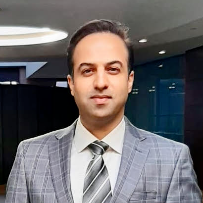
Ali Sarhadi is an Assistant Professor in the School of Earth and Atmospheric Sciences at the Georgia Institute of Technology, where he leads the Climate Risk & Extremes Dynamics Lab. His research focuses on climate extremes, compound and cascading hazards, and the integration of physics-informed artificial intelligence to assess and mitigate climate risks in a warming world. Dr. Sarhadi develops high-resolution simulations, physics-based models, and machine learning and climate AI tools to study tropical cyclones and their associated hazards, and to quantify their drivers, dynamics, and impacts on coastal communities and
-
🎤Ann Fitz-Gerald
🏛️Balsillie School of International Affairs
📅Monday, September 8th, 2025 | 4:00 PM - 5:00 PM (ET)
📍215 Classroom Instructional Center |
💻Zoom
📚Talk Title: AI, new national security threat vectors, and ungoverned space
📝Abstract Artificial intelligence is part of a broader “general-purpose” technology ecosystem that is transforming global security. Alongside AI, new threat vectors are emerging—from the growing role of non-state actors to the expansion of national security domains beyond land, sea, and air to include cyber and space. For middle powers, this landscape is further complicated by patchwork regulatory frameworks and the dominance of rules set by global powers. At the same time, the distinction between economic security and national security is rapidly dissolving, raising urgent questions about resilience, sovereignty, and competitiveness. This talk will explore what these shifts mean for the national capacity of governments, the role of civil servants, and the need to reimagine defence and security institutions in a digital era.👤Bio
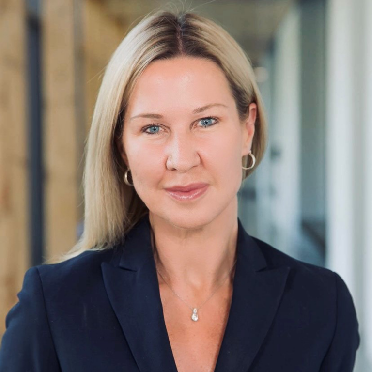
Professor Ann Fitz-Gerald is the Director of the Balsillie School of International Affairs since August 2019 and has led the School’s “Technology Governance Initiative” since 2023. She has degrees in both commerce and political science from Queen’s University and was the first civilian female to graduate from the Royal Military College of Canada. Before completing a PhD in the UK, she worked at the Pearson Peacekeeping Centre, NATO headquarters, and the North Atlantic Assembly. She has worked as an academic at King’s College, London University and Cranfield University, where, before her move back to Canada, she was Director, Defence and Security Leadership at Cranfield’s Defence Academy of the United Kingdom campus. Ann is a Senior Research Fellow at the Royal United Services Institute, a Senior Fellow at the Institute for Peace and Diplomacy, a Fellow at McLaughlin College, York University and has served/still serves on a number of non-executive boards and in advisory roles for the British Government, the United Nations and the African Union. Ann is widely published on issues concerning the governance of national security and has helped facilitate national security policies and strategies in a number of conflict-affected countries including Afghanistan, Ethiopia, Sudan, Ukraine, Sierra Leone, Nepal, Serbia, Nigeria and others. She provides regular media commentary for both national and international broadcast media. She has also been appointed by organizations such as the United Nations, the African Union and the British Government to support internationally-sponsored peace talks, including the Sudan-South Sudan peace talks led by former South African President Thabo Mbeki – efforts for which the Government of Canada awarded Ann with the Queen’s Diamond Jubilee Medal. In December 2024, Ann was recognized for her ongoing research on defence and national security and for her leadership of the Balsillie School of International Affairs and awarded the King Charles III Coronation Medal.
-
🎤Constantinos Dovrolis
🏛️School of Computer Science, Georgia Tech
📅Thursday, May 1st, 2025 | 1:00 PM - 2:00 PM (ET)
📍2456 Classroom, Klaus |
💻Zoom
📚Talk Title: Sparsity, Modularity, and Plasticity in Deep Neural Networks
📝Abstract There is a growing overlap between Machine Learning, Neuroscience, and Network Theory. These three disciplines create a fertile inter-disciplinary cycle: a) inspiration from neuroscience leads to novel machine learning models and deep neural networks in particular, b) these networks can be better understood and designed using network theory, and c) machine learning and network theory provide new modeling tools to understand the brain's structure and function, closing the cycle. In this talk, we will "tour" this cross-disciplinary research agenda by focusing on three recent works: a) the design of sparse neural networks that can learn fast and generalize well, b) the use of structural adaptation (plasticity) for continual learning, and c) the effects of a task's hierarchically modularity on generalization and learning efficiency.👤BioDr. Constantine Dovrolis is the Director of the center for Computational Science and Technology (CaSToRC) at The Cyprus Institute (CyI) as of 1/1/2023. He is also a Professor at the School of Computer Science at the Georgia Institute of Technology (Georgia Tech). He is a graduate of the Technical University of Crete (Engr.Dipl. 1995), University of Rochester (M.S. 1996), and University of Wisconsin-Madison (Ph.D. 2000).
His research is inter-disciplinary, combining Network Theory, Data Mining and Machine Learning. Together with his collaborators and students, they have published in a wide range of scientific disciplines, including climate science, biology, and neuroscience. More recently, his group has been focusing on neuro-inspired architectures for machine learning based on what is currently known about the structure and function of brain networks.
According to Google Scholar, his publications have received more than 15,000 citations with an h-index of 56. His research has been sponsored by US agencies such as NSF, NIH, DOE, DARPA, and by companies such as Google, Microsoft and Cisco. He has published at diverse peer-reviewed conferences and journals such as the International Conference on Machine Learning (ICML), the ACM SIGKDD conference, PLOS Computational Biology, Network Neuroscience, Climate Dynamics, the Journal of Computational Social Networks, and others. -
🎤Kaiyu Yang
🏛️Meta Fundamental AI Research (FAIR)
📅Tuesday, April 29th, 2025 | 2:00 PM - 3:00 PM (ET)
💻Zoom
📚Talk Title: Formal Reasoning Meets LLMs: Toward AI for Mathematics and Verification
📝Abstract AI for Mathematics (AI4Math) is intellectually intriguing and crucial for AI-driven system design and verification. Much of the recent progress in this field has paralleled advances in natural language processing, especially by training large language models on curated mathematical text datasets. As a complementary yet less explored avenue, formal mathematical reasoning is grounded in formal systems such as Lean, which can verify the correctness of reasoning and provide automatic feedback. This talk introduces the basics of AI for formal mathematical reasoning, focusing on two central tasks: theorem proving (generating formal proofs given theorem statements) and autoformalization (translating from informal to formal). I will highlight the unique challenges of these tasks through two recent projects: one on proving inequality problems from mathematics olympiads, and another on autoformalizing Euclidean geometry problems.👤BioDr. Kaiyu Yang is a Research Scientist at Meta Fundamental AI Research (FAIR), where he focuses on enhancing AI's capabilities in mathematical reasoning by integrating formal systems such as Lean. His research explores how machine learning and large language models can generate mathematical conjectures, prove theorems, and perform reasoning that combines natural and formal languages. Before joining FAIR, he was a postdoctoral scholar at Caltech. He received a Ph.D. in computer science from Princeton University and bachelor's degrees in computer science and mathematics from Tsinghua University.
-
🎤Ben Zorn
🏛️Microsoft Research
📅Thursday, April 17th, 2025 | 3:00 PM - 4:00 PM (ET)
📍C341 Classroom Van Leer
📚Talk Title: Anticipating the Accelerating Growth of AI Software
📝Abstract Incorporating AI models at runtime into software systems creates "AI Software" (AISW), which is distinct from "Plain Old Software" (POSW) that doesn't use AI models. AISW is fundamentally different from POSW in both capabilities and characteristics. Various names for AISW include copilots, agents, and GPTs, but regardless of the name, AISW has properties that invalidate many traditional software engineering techniques developed for POSW.
In my talk, I will discuss the growing importance of AISW, its differences from POSW, and the need for the systems community to adapt to this trend. Key differences include the rapid development of new AI models, new operational modalities like vision and audio, larger input contexts, unclear prompt specifications, and diverse failure modes of AI models.
To make my points concrete, I will focus on two open-source projects I've been involved with: GenAIScript, which is a JavaScript-based scripting language for building AISW applications (Generative AI Scripting | GenAIScript), and PromptPex, which is a unit test generation tool for testing AI model prompts (microsoft/promptpex: Prompt Exploration).👤Bio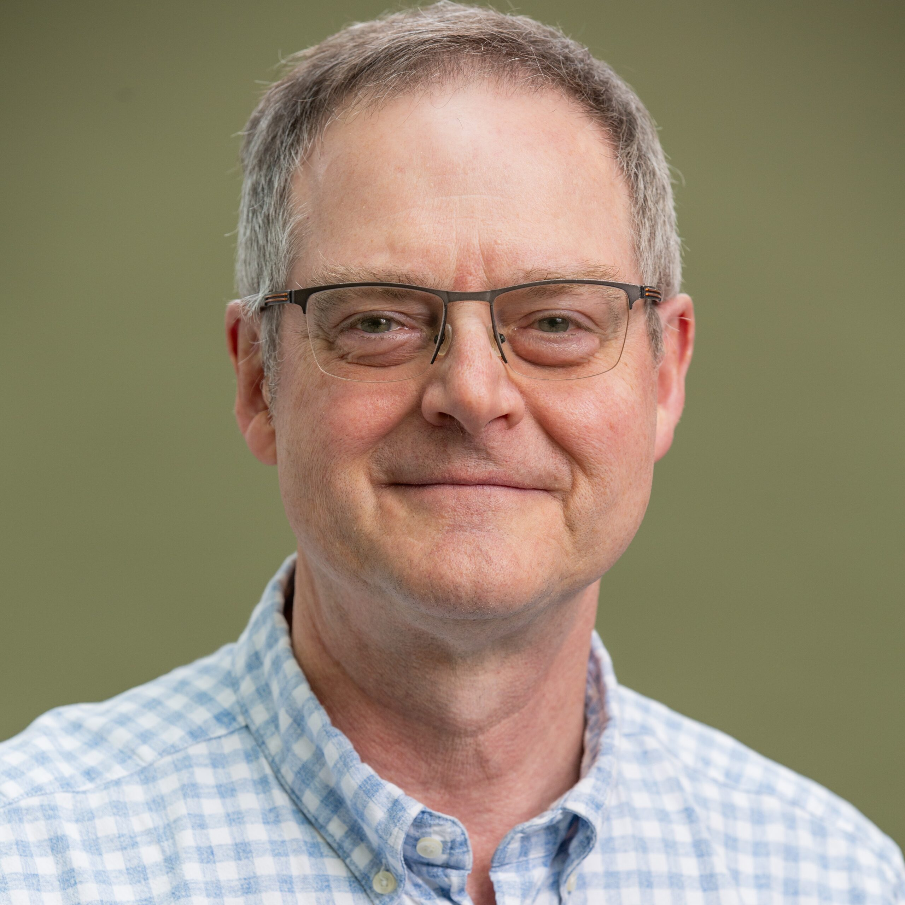
Ben Zorn is Partner Researcher and former co-manager of the Research in Software Engineering (RiSE) group in Microsoft Research, Redmond WA working on programming languages, software engineering and artificial intelligence. His research interests include usability, security, and reliability, including reliability of artificial intelligence. From 1990-1998 he was an Assistant and Associate Professor of Computer Science at the University of Colorado, Boulder. He has a PhD in computer science from the University of California at Berkeley. Ben has served as the Program Chair and General Chair of PLDI, served on the Executive Committee of SIGPLAN, as a member of the Computing Community Consortium (CCC) Council, is currently a member of the CRA Board of Directors and in 2021 he co-founded the CRA-Industry committee. He is an AAAS Fellow, an ACM Fellow and in 2021 he received the SIGPLAN Distinguished Service Award. -
🎤Kevin Leyton-Brown
🏛️University of British Columbia
📅Friday, April 4th, 2025 | 4:00 PM - 5:00 PM (ET)
📍1447 Classroom Klaus
🤝Joint FoAI + ARC + IDEaS Seminar
👥Organizers: Vijay Ganesh, Will Perkins, and Juba Ziani
📚Talk Title: STEER: Assessing the Economic Rationality of Large Language Models
📝Abstract There is increasing interest in using LLMs as decision-making "agents." Doing so includes many degrees of freedom: which model should be used; how should it be prompted; should it be asked to introspect, conduct chain-of-thought reasoning, etc? Settling these questions -- and more broadly, determining whether an LLM agent is reliable enough to be trusted -- requires a methodology for assessing such an agent's economic rationality. This talk describes one. We survey the economic literature on both strategic and non-strategic decision making, taxonomizing 124 fine-grained "elements" that an agent should exhibit, each of which can be tested in up to 3 distinct ways, grounded in up to 10 distinct domains, and phrased according to 5 perspectives (first-person, second-person, etc). The generation of benchmark data across this combinatorial space is powered by a novel LLM-assisted data generation protocol that we dub auto-STEER, which generates questions by adapting handcrafted templates to new domains and perspectives. Because it offers an automated way of generating fresh questions, auto-STEER mitigates the risk that LLMs will be trained to overfit evaluation benchmarks; we thus hope that it will serve as a useful tool both for evaluating and fine-tuning models for years to come. Finally, we describe the results of a large-scale empirical experiment with 28 different LLMs, ranging from small open-source models to the current state of the art. We examined each model's ability to solve problems across our whole taxonomy and present the results across a range of prompting strategies and scoring metrics.👤Bio
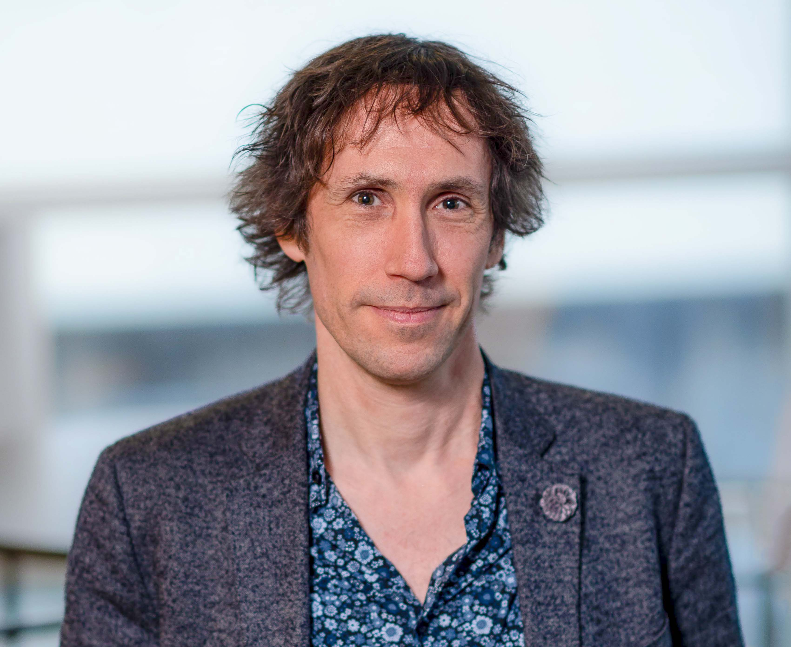
Kevin Leyton-Brown is a professor of Computer Science and a Distinguished University Scholar at the University of British Columbia. He holds a Canada CIFAR AI Chair at the Alberta Machine Intelligence Institute and is an associate member of the Vancouver School of Economics. He received a PhD and an M.Sc. from Stanford University (2003; 2001) and a B.Sc. from McMaster University (1998). -
🎤José Cambronero
🏛️Google
📅Wednesday, April 2nd, 2025 | 3:30 PM - 4:30 PM (ET)
📍1456 Classroom Klaus
🤝Joint PLSE + FoAI Seminar
👥Organizers: Vijay Ganesh and Alex Orso
📚Talk Title: Let the Agent Do It: Fixing, Validating, and Migrating Code at Google with LLM-based Software Agents
📝Abstract The DevAI team at Google is tasked with developing AI-based features for our internal tools with the goal of making Google software developers more effective and efficient at their jobs. In this talk, I'll provide an overview of some of the unique challenges of applying AI to internal Google developer systems. These challenges motivate the need to build solutions tailored to Google, and I'll present two such LLM-based systems: a program repair agent and a test generation agent, which can respectively patch real Google bugs and generate tests that improve our confidence in these patches. In addition, I will describe broad use cases for AI-based code migration in our codebase. Throughout the talk, I'll focus on some of the open challenges we have faced and how those can inform ongoing research in software engineering and AI.👤Bio
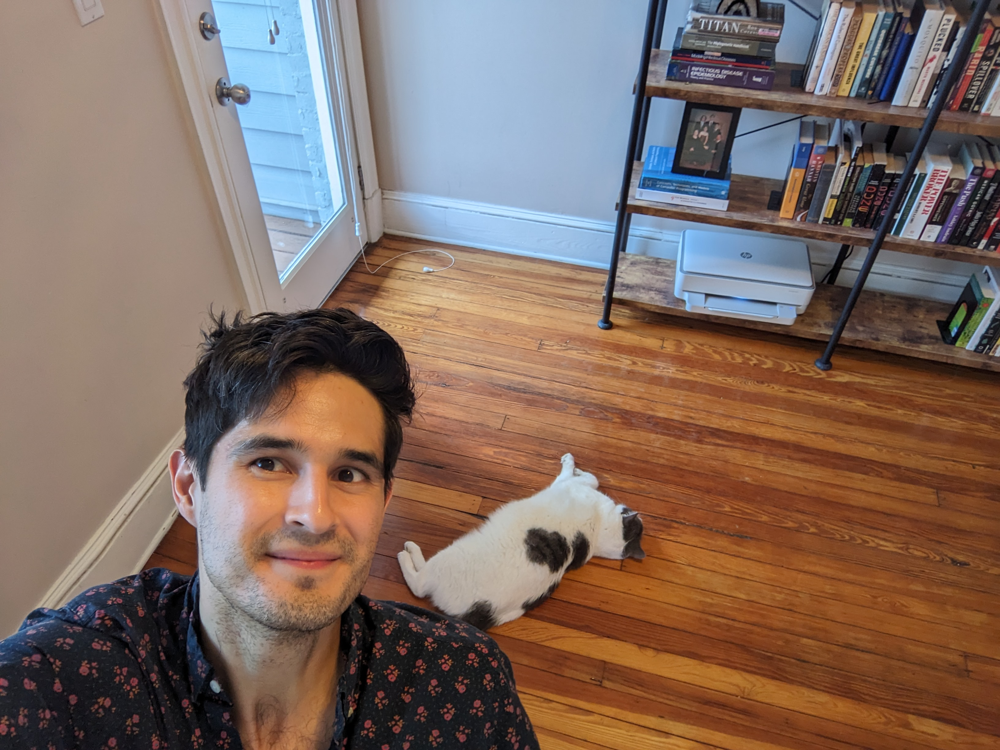
José Cambronero is a staff software engineer in Google's DevAI team, where he researches new AI-based solutions to software engineering challenges encountered by Google developers. Prior to joining Google, José was a senior researcher in the PROSE team at Microsoft, working on program synthesis and repair. José holds a PhD in Computer Science from MIT, where he worked under the supervision of Martin Rinard. José is originally from Costa Rica but has bounced around a large portion of the USA's east coast. -
🎤Mirco Giacobbe
🏛️University of Birmingham
📅Thursday, March 6th, 2025 | 3:30 PM - 4:30 PM (ET)
📍L5 Classroom Howey Physics
📚Talk Title: Neural Model Checking
📝Abstract Model checking aims to derive rigorous proofs for the correctness of systems and has traditionally relied on symbolic reasoning methods. In this talk, I will argue that model checking can also be effectively addressed using machine learning too. I will present a realm of approaches for formal verification that leverage neural networks to represent correctness certificates of systems, known as "neural certificates." This approach trains certificates from synthetic executions of the system and then validates them using symbolic reasoning techniques. Building upon the observation that checking a correctness certificate is much simpler than finding one, and that neural networks are an appropriate representation for such certificates, this results in a machine learning approach to model checking that is entirely unsupervised, formally sound, and practically effective. I will demonstrate the principles and experimental results of this approach in safety assurance of software, probabilistic systems, and control.👤Bio
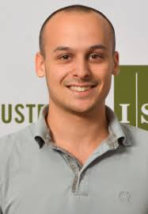
Mirco Giacobbe is an Assistant Professor at the University of Birmingham. He previously held research positions at the University of Oxford and Fondazione Bruno Kessler. He obtained his PhD at the Institute and Science and Technology Austria and studied at the University of Trento and RWTH Aachen. His research interests lie between formal methods and artificial intelligence, where he develops automatic techniques to assure that algorithmic systems are safe and trustworthy. -
🎤Aishik Ghosh
🏛️UC Irvine & Berkeley Lab
📅Wednesday, March 5th, 2025 | 3:30 PM - 4:30 PM (ET)
📍1456 Classroom Klaus
📚Talk Title: Probing High-Dimensional Spaces in Particle Physics: From Simulation-Based Inference to Theory Design
📝Abstract Particle physicists grapple with the largest data analysis problems, with the Large Hadron Collider soon to generate data at a rate of 100 TB/s. When confronted with extremely high-dimensional problems, physicists traditionally reduce the challenge to a lower dimensional representation where they can build intuition. I will discuss why such dramatic data reduction leads to loss of crucial information, and how neural networks can be combined with uncertainty quantification tools to perform statistical analysis directly using the high-dimensional data. This newly developed method is now being deployed as a service on DOE supercomputers, to usher in an extra of high-dimensional statistical analysis across particle physics experiments.
Similarly, a significant challenge in theoretical physics is the vast space of mathematical symmetries available to describe our Universe. Despite the dedicated efforts of theorists to explore this expanse, an overwhelming majority remains uncharted. I will discuss an ambitious new research direction in theoretical physics where, in collaboration with researchers at Georgia Tech, we leverage computational and AI tools to uncover new avenues for neutrino theory model building.👤Bio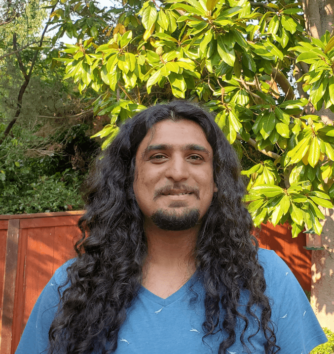
Dr. Aishik Ghosh is a postdoctoral scholar at UC Irvine and an affiliate at Berkeley Lab, focusing on the development of high-dimensional statistical inference and uncertainty quantification methods using AI for particle and astrophysics. He has papers in physics and astrophysics journals, as well at NeurIPS. He also developed the first deep generative models for fast simulation to be deployed in a particle physics experiment in 2018. Recently, Aishik has been developing advanced symbolic regression and reinforcement learning methods to address challenges in theoretical neutrino physics in an interdisciplinary collaboration with Prof. Vijay Ganesh at Georgia Tech. Previously, he earned his PhD in particle physics from the University of Paris-Saclay. -
🎤Xia (Ben) Hu
🏛️Rice University
📅Wednesday, February 12th, 2025 | 12:30 PM - 1:30 PM (ET)
📍Klaus 1456
📚Talk Title: Efficient LLM Serving via Lossy Computation
📝Abstract Large language models (LLMs) have exhibited human-like conversational abilities. Yet, scaling LLMs to longer contexts, such as extracting information from lengthy articles—one of the most fundamental tasks in healthcare applications—poses significant challenges. The primary issues are their inability to handle contexts beyond pre-training lengths and system constraints that make deployment difficult, as memory requirements for inference increase with context length. The key idea to overcome these challenges is that LLMs are extremely robust to noise from lossy computation, such as low-precision computation. Following this insight, we will discuss recent advancements in serving LLMs at scale, particularly in handling longer contexts. To address the algorithmic challenge, I will share our recent work on extending LLM context length to at least 8× longer by coarsening the positional information of distant tokens. To address the system challenge, I will discuss our recent efforts in quantizing the intermediate states of past tokens to 2-bit numbers, leading to a 8x memory efficiency and 3.5x wall-clock time speedup without harming performance. Finally, I will highlight our latest projects applying LLMs in healthcare, particularly how we utilize retrieval techniques for long contexts to mitigate the hallucination problem in healthcare chatbots.👤Bio
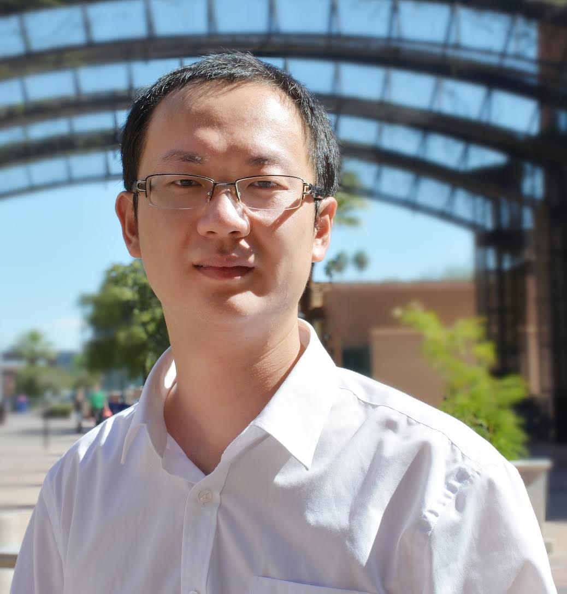
Dr. Xia "Ben" Hu is an Associate Professor at Rice University in the Department of Computer Science. Dr. Hu has published over 200 papers in several major academic venues, including NeurIPS, ICLR, ICML, KDD, IJCAI, etc. An open-source package developed by his group, namely AutoKeras, has become the most used automated deep learning system on GitHub (with over 9,000 stars and 1,000 forks). Additionally, his work on LLM efficiency, deep collaborative filtering, anomaly detection, knowledge graphs, and fast interpretation has been incorporated into production systems at Hugging Face, TensorFlow, Apple, Bing, and Meta, respectively. His papers have received several Best Paper (Candidate) awards from venues such as ICML, WWW, WSDM, ICDM, AMIA, and INFORMS. He is the recipient of the NSF CAREER Award and the ACM SIGKDD Rising Star Award. His work has been cited more than 30,000 times with an h-index of 76. He served as General Co-Chair for WSDM 2020 and ICHI 2023, as well as Program Co-Chair for AIHC 2024 and CHASE 2025. -
🎤Wuyang Chen
🏛️Simon Fraser University
📅Friday, February 7th, 2025 | 4 PM - 5 PM (ET)
📍Klaus 1447 |
💻Zoom
📚Talk Title: Scientific Machine Learning in the New Era of AI: Reasoning, Foundations, Visualization
📝Abstract The rapid advancements in artificial intelligence (AI), propelled by data-centric scaling laws, have significantly transformed our understanding and generation of both vision and language. However, natural media, such as images, videos, and languages, represent only a fraction of the modalities we encounter, leaving much of the physical world underexplored. We propose that Scientific Machine Learning (SciML) offers a knowledge-driven framework that complements data-driven AI, enabling us to better understand, visualize, and interact with the diverse complexities of the physical world.
In this talk, we will delve into the cutting-edge intersection of AI and SciML. First, we will discuss the automation of scientific analysis through multi-step reasoning grounded with formal languages, paving the way for more advanced control and interactions in scientific models. Second, we will explore how scaling scientific data can train foundation models that integrate multiphysics knowledge, thereby enhancing traditional simulations with a deeper understanding of physical principles. Finally, we will demonstrate how SciML can streamline the visualization of intricate geometries, while also showing how spatial intelligence can be adapted for more robust SciML modeling.👤Bio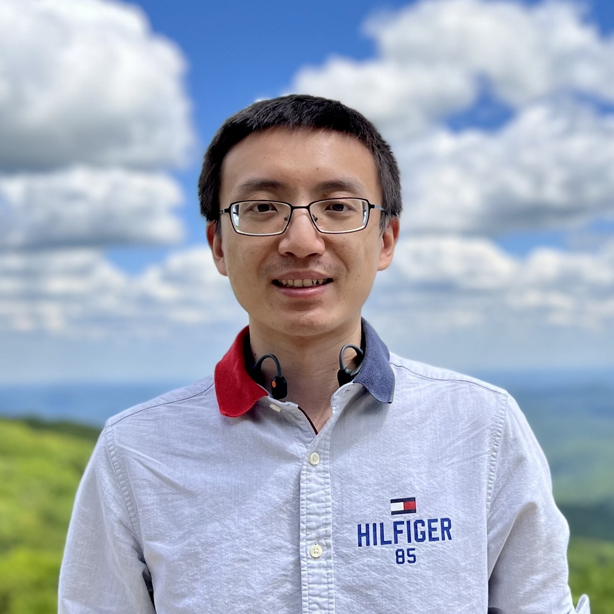
Dr. Wuyang Chen is a tenure-track Assistant Professor in Computing Science at Simon Fraser University. Previously, he was a postdoctoral researcher in Statistics at the University of California, Berkeley. He obtained his Ph.D. in Electrical and Computer Engineering from the University of Texas at Austin in 2023. Dr. Chen's research focuses on scientific machine learning, theoretical understanding of deep networks, and related applications in foundation models, computer vision, and AutoML. He also works on domain adaptation/generalization and self-supervised learning. Dr. Chen has published papers at CVPR, ECCV, ICLR, ICML, NeurIPS, and other top conferences. Dr. Chen's research has been recognized by NSF (National Science Foundation) newsletter in 2022, INNS Doctoral Dissertation Award and the iSchools Doctoral Dissertation Award in 2024, and AAAI New Faculty Highlights in 2025. Dr. Chen is the host of the Foundation Models for Science workshop at NeurIPS 2024 and co-organized the 4th and 5th versions of the UG2+ workshop and challenge at CVPR in 2021 and 2022. He also serves on the board of the One World Seminar Series on the Mathematics of Machine Learning. -
🎤Pavlo Molchanov
🏛️NVIDIA Research
📅Thursday, October 10th, 2024 | 12 PM - 1 PM (EDT)
📍B5 Classroom in Boggs |
💻Zoom
📚Talk Title: Efficiency in Large Language Models with Post-Training Compression
📝Abstract Training large language models (LLMs) for various deployment scales and sizes traditionally involves training each variant from scratch, a process that is highly compute-intensive. In this talk, we explore three key techniques to significantly enhance LLM efficiency: (1) pruning and distillation, (2) Flexible LLM architecture with the Many-In-One concept, and (3) an advanced Parameter Efficient Finetuning Technique. Pruning and distillation can reduce pretraining costs by up to 40x, delivering models that are up to 16% more accurate than those trained from scratch. The Flexible LLM architecture allows the transformation of a single LLM into an infinite number of smaller sub-models, streamlining deployment across various applications. Lastly, we will discuss DoRa, a state-of-the-art parameter-efficient fine-tuning method based on weight decomposition, enabling efficient model fine-tuning with limited data.👤Bio
 Pavlo Molchanov is a Distinguished Research Scientist and Team Manager at NVIDIA Research. Since 2023, he has been leading the Deep Learning Efficiency Team. He obtained a PhD from Tampere University of Technology, Finland, in 2014. During his studies, he received the Nokia Foundation Scholarship, GETA Graduate School grant, Best Paper Award, and Young Researcher Award at EuRAD. Recently, he has focused on efficiency in LLMs and multi-modal models: compression, NAS-like acceleration, novel architectures, and adaptive/conditional inference. His past research has led to several NVIDIA product integrations: hand, body, and facial keypoint estimation and recognition in DriveIX, Broadcast, Omniverse, Maxine; efficient vision backbones in TAO, developed compression techniques in TAO, NVIDIA AV, TRT Model Optimization; and small in-game LLMs.
Pavlo Molchanov is a Distinguished Research Scientist and Team Manager at NVIDIA Research. Since 2023, he has been leading the Deep Learning Efficiency Team. He obtained a PhD from Tampere University of Technology, Finland, in 2014. During his studies, he received the Nokia Foundation Scholarship, GETA Graduate School grant, Best Paper Award, and Young Researcher Award at EuRAD. Recently, he has focused on efficiency in LLMs and multi-modal models: compression, NAS-like acceleration, novel architectures, and adaptive/conditional inference. His past research has led to several NVIDIA product integrations: hand, body, and facial keypoint estimation and recognition in DriveIX, Broadcast, Omniverse, Maxine; efficient vision backbones in TAO, developed compression techniques in TAO, NVIDIA AV, TRT Model Optimization; and small in-game LLMs.
View Student Speakers -
🎤Ali Sarhadi
🏛️School of Earth and Atmospheric Sciences, Georgia Institute of Technology
📅Monday, September 22nd, 2025 | 12:00 PM - 1:00 PM (ET)
📍 Classroom 320 Cherry Emerson |
💻Zoom
📚Physics-Informed Machine Learning for Climate Risk
Organizers
Yingyan (Celine) Lin
Associate Professor
https://eiclab.scs.gatech.edu/
Research Areas: Efficient machine learning through cross-layer innovations
Vijay Ganesh
Professor
Research Areas: SAT/SMT solvers, combinations of machine learning and automated reasoning, AI, software engineering, security, combinatorial mathematics, automated scientific discovery
-
🎤Irfan Essa
🏛️School of Interactive Computing, Georgia Institute of Technology
📅Tuesday, October 7, 2025 | 12:00 PM - 1:00 PM (ET)
📍 CODA Building 9th floor Atrium |
💻Zoom
📚Wizard of Oz at the Sphere
-
🎤Grant Schoenebeck
🏛️School of Information, University of Michigan
📅Thursday, October 16, 2025 | 4PM - 5PM (ET)
📍 Classroom 204 Cherry Emerson |
💻Zoom
📚Eliciting Informative Text Evaluations with Large Language Models
-
🎤Karthik Pattabiraman
🏛️Department of Electrical and Computer Engineering, University of British Columbia
📅Thursday, November 6, 2025 | 4PM - 5PM (ET)
📍 Classroom N210, Howey Physics Building |
💻Zoom
📚Building Error Resilient and Attack Resilient Machine Learning Systems
-
🎤Pat Langley
🏛️Georgia Tech Research Institute
📅Friday, Jan 30th, 2026 | 4PM - 5PM (ET)
📍 Classroom 380, Bunger Henry Building |
💻
Zoom
🎥
Recording
📚Integrated Systems for Computational Scientific Discovery: Progress, Challenges, and Implications
-
🎤Joe Stubbs
🏛️University of Texas at Austin
📅Tuesday, Feb 3rd, 2026 | 4PM - 5PM (ET)
📍 Classroom 380, Bunger Henry Building |
💻Zoom
📚Sequencelib: A Platform for Formalizing the OEIS
-
🎤Walter Moreira
🏛️University of Texas at Austin
📅Thursday, Feb 5th, 2026 | 4PM - 5PM (ET)
📍 Classroom 183, J. Erskine Love Building |
💻Zoom
📚Automated Formalization of OEIS using the Sequencelib Platform
-
🎤Sanjit A. Seshia
🏛️University of California, Berkeley
📅Thursday, Feb 19th, 2026 | 2PM - 3PM (ET)
📍 1116 East Seminar Room @ Klaus |
💻Zoom
🎥Recording
📚Full-Stack AI-Enabled Formal Methods: Past, Present, and Future
-
🎤Lisa Carbone
🏛️Rutgers University
📅Thursday, Feb 26th, 2026 | 4:30PM - 5:30PM (ET)
💻Zoom
🎥Recording
📚AI Tools for Infinite Dimensional Symmetry Groups
-
🎤Satish Chandra
🏛️Meta
📅Friday, Mar 6th, 2026 | 1PM - 2PM (ET)
📍 CHOA Seminar Room @ Krone Engineered Biosystems Building (EBB) |
💻Zoom
📚Coding and AI: How did we get here and where are we going?
-
🎤Subbarao Kambhampati
🏛️Arizona State University
📅Monday, 30 March 2026 @ 2-3pm ET
📍 Classroom 105 @ Instructional Center (IC) |
💻Zoom
🎥Recording
📚On the Centrality of Verifiers (Simulators/World Models) In the Quest for Robust LLM Reasoning/Planning
-
🎤Thomas Ball
🏛️Honorary Professor, Lancaster University / Affiliate Faculty, University of Washington
📅Monday, April 6, 2026 @ 4-5pm ET
📍 Suddath Seminar Room 1128 @ Petit Institute for Bioengineering and Bioscience |
💻Zoom
🎥Recording
📚The Micro:bit Innovation and Research Lab (https://lancaster.ac.uk/mirl)
-
🎤Isil Dillig
🏛️University of Texas, Austin
📅Wednesday, 8 April 2026 @ 3:30-4:30pm ET
📍 Classroom C341 @ Van Leer Building |
💻Zoom
🎥Recording
📚Trustworthy Neuro-Symbolic Programming with Informal Specifications
-
🎤Munmun De Choudhury
🏛️School of Interactive Computing, Georgia Tech
📅Friday, April 17, 2026 @ 12-1pm ET
📍 Classroom 380 @ Bunger Henry Building |
💻Zoom
🎥Recording
📚Rethinking the Foundations of Generative AI Through Mental Health